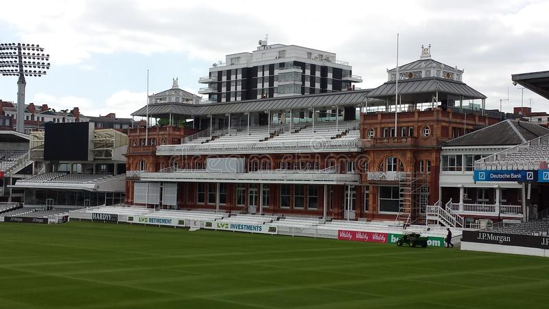

- There are many cricket stadiums in the world,some of them have great history.
-Often called the 'home of cricket', Lords' history dates back to 1787 when Thomas Lord opened his first cricket ground on Dorset Fields – where Dorset Square in Marylebone stands today. Lord moved the ground to Lisson Grove, before ultimately settling on its current location in 1814.
1. Lord's :

- The third of Thomas Lord's grounds was opened in 1814 and soon became the major venue as cricket became the world's leading sport in the 19th century. While cricket has been overtaken by other international events, and the game itself has become overtly commercial, Lord's has retained its place as the spiritual home.
- The ground was built way back in 1853 when the then 15-year-old Melbourne Cricket Club was forced by the government to move from its former site because the route of Australia's first steam train was to pass through the oval.With a capacity of 100,000 people, the Melbourne Cricket Ground (MCG) is the largest stadium in Australia, and the world's largest cricket stadium.
- The Eden Gardens is a cricket ground in Kolkata, India. Established in 1864, it is the oldest and second-largest cricket stadium in India and third-largest in the world. The stadium currently has a capacity of 66,000.